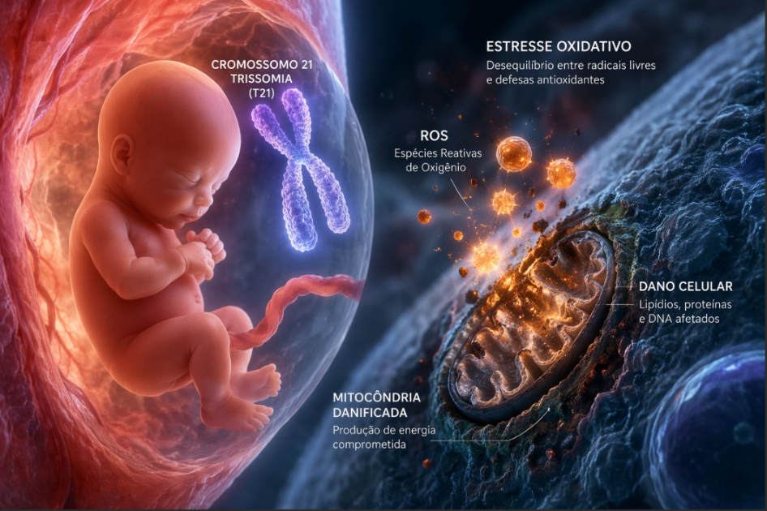

O estresse oxidativo é um processo que acontece quando há um desequilíbrio entre substâncias que causam dano às células e os mecanismos de defesa do organismo. Na Síndrome de Down, esse processo começa muito cedo — ainda durante a gestação.
Pesquisas mostram que bebês com trissomia do cromossomo 21 já apresentam alterações desde o útero, incluindo danos nas células e mudanças no funcionamento das mitocôndrias, que são responsáveis pela produção de energia no corpo.

Um dos pontos importantes é o desequilíbrio das enzimas antioxidantes. Enquanto uma enzima chamada SOD1 está aumentada, outras que ajudam a proteger o organismo estão reduzidas. Isso acaba favorecendo a produção de substâncias tóxicas que podem prejudicar os tecidos.
Além disso, já é possível identificar sinais de inflamação e danos celulares no líquido amniótico, como alterações em proteínas e gorduras, indicando que o organismo do bebê está sob estresse desde cedo.
Por outro lado, o corpo também tenta se proteger. Um exemplo é o aumento da asprosina, uma substância que pode ajudar a reduzir esses danos, funcionando como uma resposta adaptativa.
Essas descobertas são importantes porque abrem caminhos para diagnósticos mais precoces e até possíveis intervenções ainda durante a gestação, com o objetivo de melhorar o desenvolvimento e a qualidade de vida dessas crianças.
Este conteúdo foi produzido por acadêmicos de Fisioterapia com o apoio de imagens e vídeos gerados por inteligência artificial, utilizados para enriquecer a experiência visual e transmitir a mensagem com mais sensibilidade.
Esse texto é apenas para fins informativos. Para orientação ou diagnóstico médico, consulte um profissional.
Referências:
- ● GARLET, T. R. et al. Systemic oxidative stress in children and teenagers with Down syndrome. Life Sciences, v. 93, p. 558–563, 2013.
- ● SLIVŠEK, G. et al. Oxidative Stress and Down Syndrome: A Systematic Review. Antioxidants, v. 14, n. 816, 2025.
- ● FERRARI, M.; STAGI, S. Oxidative Stress in Down and Williams-Beuren Syndromes: An Overview. Molecules, v. 26, n. 3139, 2021.